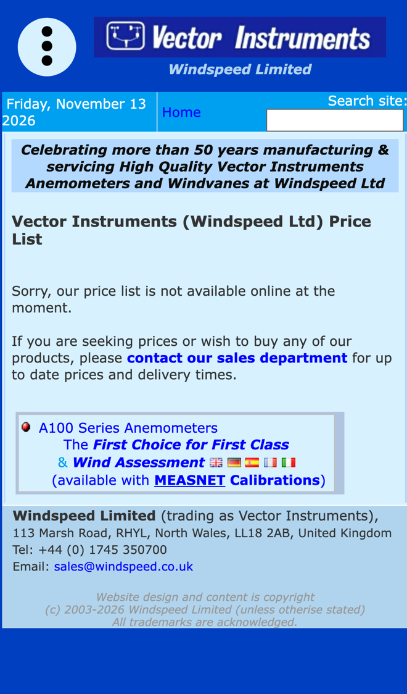

Windspeed: prices, repairs and recalibrations without the wait
I went through your website on a phone, the way a wind energy buyer or an instrument owner abroad would, and read your homepage, contact, price list, repairs, calibration and help pages. The technical detail is excellent and the help section answers a great deal. Where I think you'd save the sales office time, and win more orders and repeat work, is what happens when someone wants a price or a repair.
What's already working
Three things I'd change
Send prices and lead times straight away
Your price list page says "Sorry, our price list is not available online at the moment." Buyers are asked to "contact our sales department for up to date prices and delivery times", and "phone calls can only be answered 9am-4pm UK time".

A buyer in America or the Far East who emails after your office closes waits a full day for a price. If they're comparing suppliers for a project, that day can decide the order.
- A short form asks for the model, options such as the /SE heater or a MEASNET certificate, the quantity and the delivery country.
- It works out the price and lead time from your own list and sends it as a quote, or holds it for your team to approve first if you prefer.
- Quotes that haven't turned into orders get a polite follow-up, and you see them all in one list.
Take repair and recalibration returns online
Your repairs page asks customers to "contact us at sales@windspeed.co.uk for details of the services our factory can offer", and says "Please contact us for details of these services."
Every return starts with emails to explain the fault, agree the work and arrange shipping. Collecting it all at the start saves your team that back and forth on every instrument.
- The customer fills in the model, serial number, what's wrong and whether they want a MEASNET recalibration.
- They get a returns number and packing instructions straight away, so the instrument arrives labelled and expected.
- They get an update when it's received, quoted and ready to ship, without having to email to ask.
Remind customers when calibrations run out
Your repairs page says MEASNET advise "their calibrations are normally only valid for 12 months in the field", and that you advise anemometers "be returned to us for maintenance/overhaul between deployments".
Every MEASNET certificate you sell has a date it runs out. A reminder at the right time brings that instrument back to your factory, not to an unapproved repairer.
- Each MEASNET certificate is logged with the customer and serial number when the order ships.
- Before the 12 months are up, the customer gets a short reminder with a link to the returns form.
- Each month you see whose calibrations are due and who has booked a return.
Your website, answering for you
An assistant that answers the questions you get asked again and again, at any hour and in any time zone. These answers come only from your own website: your repairs, calibration and contact pages.
Anything it can't answer, it passes to you with the customer's details.
What happens next
For five local businesses I'm setting up one of these for free, in return for an honest review. Pick whichever would help most.
I'm Tom Williams and I run Tomoni-AI. If a 20-minute chat would help, reply to my email or give me a ring.
Call 07971 512158Email Tom